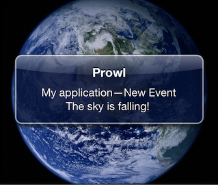

What is it?
Avviso is a collection of Arduino and Processing libraries and examples to send push notifications to an iOS device via Prowl. Use it in place of having your Arduino send you an email or SMS. Apple's push notification service is fast and free. In January 2011, Prowl's API removed the SSL requirement, making it simple to send push notifications from an Arduino. The Avviso libraries call the Prowl API directly.
How do I get started?
Get the Prowl iOS app on the App Store and generate a Prowl API key. Next download Avviso on GitHub and paste the API key into the RingTheRedPhone example for Processing or Arduino. The Processing example looks like this:
The Arduino sketch is just as simple. Prowl delivers the message in a few moments through Apple's push notification service:

Support
Open an issue on GitHub, or email avviso@avvisoapp.com.
Like Avviso? Try Ciao.
Ciao is my iOS app to find your Arduino over Bonjour and talk to it on the local network.